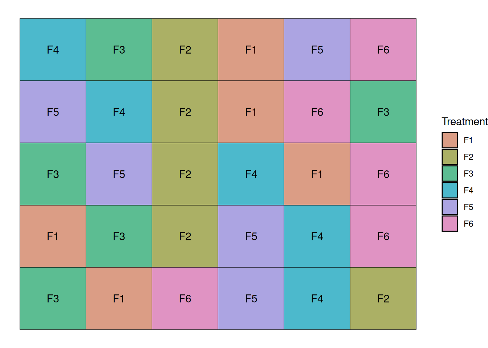
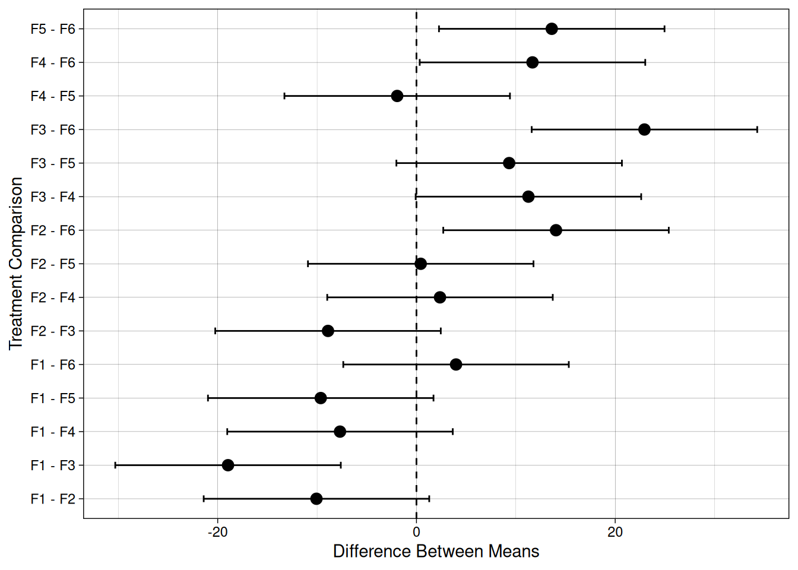
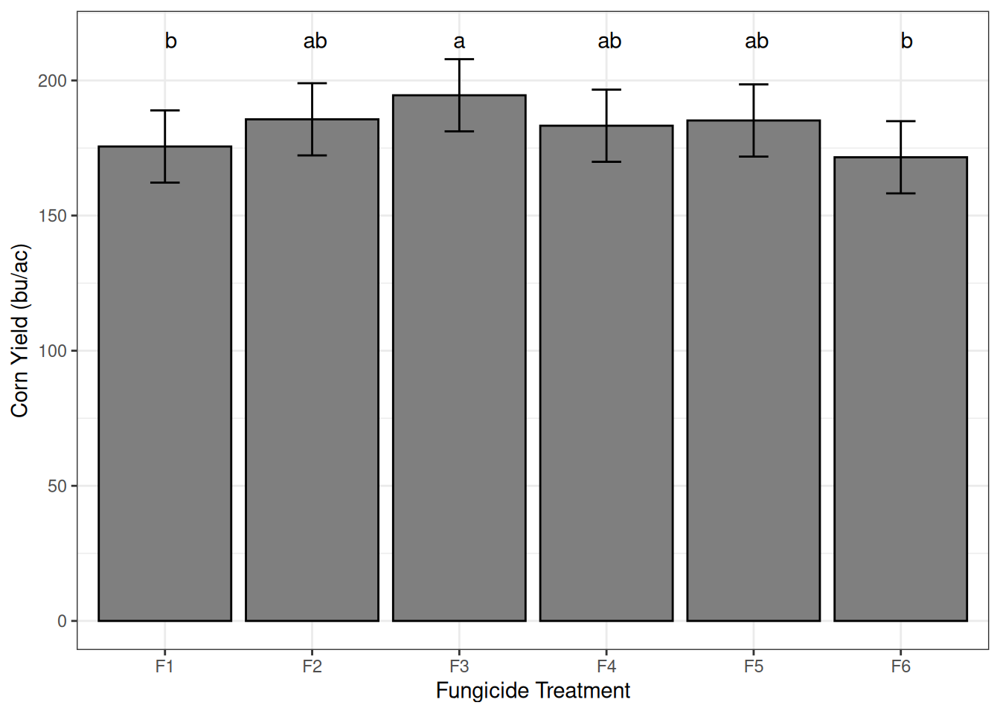
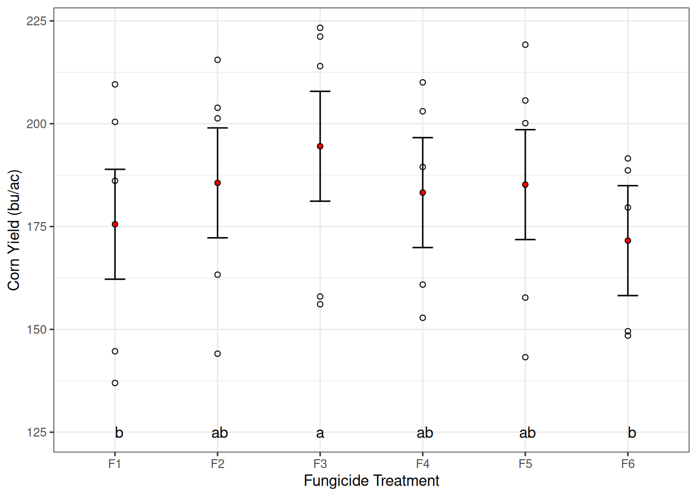
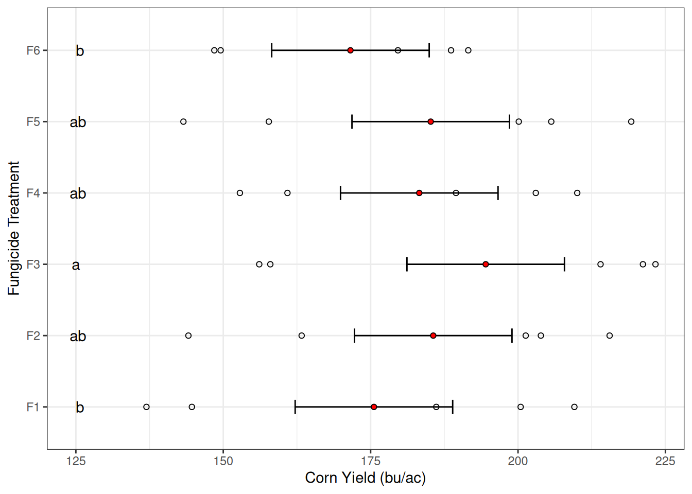

Introduction
The previous two units focused on the design and analysis of effects in multiple-treatment trials. Our focus there was to determine whether treatment effects explained more of the variation among individual observations than residual error.
In this unit, we move to the next practical question:
Once ANOVA indicates evidence that treatments differ, how do we decide which means are different from each other?
Case Study
In the second example of Module 7, we looked at an example study in which we investigated the effect of 6 candidate fungicide treatments in corn yield. These were coded F1 through F6. This study was conducted as a randomized complete block design with one factor, the fungicide treatment.
Let’s recap:
Going across vertically, we had 5 blocks and, within each block, we randomized the 6 fungicide treatments.
ANOVA First
Before separating means, we fit the ANOVA model:
\[Y_{ij} = \mu + b_i + T_j + \varepsilon_{ij}\] \[b_i \sim N(0, \sigma^2_{block})\]
Where:
- \(Y_{ij}\) is observed corn yield
- \(\mu\) is the overall mean
- \(b_i\) is the block random effect
- \(T_j\) is the fungicide treatment effect
- \(\varepsilon_{ij}\) is the residual error term
Below, we fit the model represented by our linear additive model above. In this case, I chose to fit block as a random effect, partly because we are not interested in the effect of block itself. Block was included here to account for the systematic source of variability that it represents.
library(nlme)
model1 <- lme(yield ~ trt,
random = ~ 1 | block,
data = rcbd)
anova(model1) numDF denDF F-value p-value
(Intercept) 1 20 200.72743 <.0001
trt 5 20 4.45298 0.0069Our analysis of variance tells us that there is strong evidence that at least one treatment effect (\(T_j\)) is different from zero. So, next, we will proceed with what’s called a means-separation test.
Fisher’s Least Significant Difference
Relationship with Confidence Intervals
Before introducing Fisher’s Least Significant Difference (LSD), it is helpful to connect the idea to something we already know: confidence intervals.
Recall that a confidence interval for the difference between two treatment means is
\[ (\bar{Y}_i - \bar{Y}_j) \pm t_{\alpha/2,df} \times SE(\bar{Y}_i - \bar{Y}_j) \]
where
- \(\bar{Y}_i - \bar{Y}_j\) is the difference between treatment means
- \(SE(\bar{Y}_i - \bar{Y}_j)\) is the standard error of that difference
- \(t_{\alpha/2,df}\) is the critical value from the t distribution
This interval represents the range of plausible values for the true difference between treatments.
The hypothesis test
\[ H_0 : \mu_i = \mu_j \]
is equivalent to asking whether 0 lies inside the confidence interval.
- If 0 is inside the interval, the treatments are not significantly different.
- If 0 is outside the interval, the treatments are significantly different.
Flipping the Confidence Interval Logic
Instead of checking whether 0 lies inside the interval, we can rewrite the condition mathematically.
A difference is significant when
\[ |\bar{Y}_i - \bar{Y}_j| > t_{\alpha/2,df} \times SE(\bar{Y}_i - \bar{Y}_j) \]
In other words, the absolute difference between the means must exceed the half-width of the confidence interval.
That half-width is exactly what we call the Least Significant Difference (LSD).
\[ LSD = t_{\alpha/2,df} \times SE(\bar{Y}_i - \bar{Y}_j) \]
So LSD is simply the minimum difference between two treatment means required to declare them significantly different.
Let’s compute the LSD for our fungicide treatment with an \(\alpha = 0.05\):
\[LSD = t_{\alpha/2,df} \times SE(\bar{Y}_i - \bar{Y}_j)\] \[LSD = t_{0.025,20} \times 5.44\] \[LSD = 2.09 * 5.44 = 11.35\]
This means that differences between means that are greater than 11.35 bu/ac provide evidence of difference between the treatment populations.
The LSD Procedure
The LSD test is therefore very direct:
- Calculate the Least Significant Difference (LSD)
- Compare every pair of treatment means
- If the absolute difference between two means exceeds the LSD, the treatments are significantly different
Conceptually, LSD is simply reversing the logic of the confidence interval test and turning it into a single comparison threshold.
Visualizing the Confidence Intervals for Mean Differences
Following this relationship between confidence intervals and the LSD value, we can visualize the confidence interval for treatment differences for the fungicide experiment we’ve been working with.
In the graph below, each point represents the estimated difference between two treatment means, and the error bars represent the confidence interval for the difference. In this case, when a treatment difference confidence interval crosses the dashed vertical line, we fail to reject \(H_0\) for that treatment comparison.
The half-width of each interval corresponds exactly to the LSD threshold.

Computing Pairwise Comparisons in R
We can compute pairwise comparisons using emmeans.
In R, a great framework to conduct multiple comparisons is based on the combination of the emmeans and multcomp libraries.
Here, we load these two libraries
library(emmeans)
library(multcomp)The emmeans library computes estimated marginal means for each treatment combination. In this case, we only have one factor (fungicide treatment), which is denoted by the variable trt.
emm <- emmeans(model1, ~ trt)
emm trt emmean SE df lower.CL upper.CL
F1 176 13.4 4 138 213
F2 186 13.4 4 149 223
F3 195 13.4 4 157 232
F4 183 13.4 4 146 220
F5 185 13.4 4 148 222
F6 172 13.4 4 134 209
Degrees-of-freedom method: containment
Confidence level used: 0.95 Great, now that we have computed the estimated means, we can compare each pair of means. The argument adjust determines p-value adjustments. The LSD procedure does not have any p-value adjustments, so we will specify none.
Below, we have 15 comparisons for our six means. The estimate column shows the estimated difference between the means. Note that absolute estimates greater than 11.35 have a p-value lower than 0.05.
pairs(emm, adjust = "none") contrast estimate SE df t.ratio p.value
F1 - F2 -10.06 5.44 20 -1.850 0.0792
F1 - F3 -18.96 5.44 20 -3.485 0.0023
F1 - F4 -7.69 5.44 20 -1.414 0.1727
F1 - F5 -9.63 5.44 20 -1.771 0.0919
F1 - F6 3.98 5.44 20 0.732 0.4726
F2 - F3 -8.90 5.44 20 -1.636 0.1175
F2 - F4 2.37 5.44 20 0.435 0.6679
F2 - F5 0.43 5.44 20 0.079 0.9378
F2 - F6 14.04 5.44 20 2.582 0.0178
F3 - F4 11.27 5.44 20 2.071 0.0515
F3 - F5 9.33 5.44 20 1.715 0.1018
F3 - F6 22.94 5.44 20 4.218 0.0004
F4 - F5 -1.94 5.44 20 -0.356 0.7252
F4 - F6 11.68 5.44 20 2.146 0.0443
F5 - F6 13.62 5.44 20 2.503 0.0211
Degrees-of-freedom method: containment A different way of showing the same information is by dividing the means in groups that present a difference between them. Letter groupings summarize pairwise comparisons and should be interpreted cautiously when groups overlap.
cld(emm, adjust = "none") trt emmean SE df lower.CL upper.CL .group
F6 172 13.4 4 134 209 1
F1 176 13.4 4 138 213 12
F4 183 13.4 4 146 220 23
F5 185 13.4 4 148 222 23
F2 186 13.4 4 149 223 23
F3 195 13.4 4 157 232 3
Degrees-of-freedom method: containment
Confidence level used: 0.95
significance level used: alpha = 0.05
NOTE: If two or more means share the same grouping symbol,
then we cannot show them to be different.
But we also did not show them to be the same. Very often, you will see these groups represented by letters, instead of numbers. Here, we can use some pre-built R objects, like the letters and LETTERS object, for example.
letters [1] "a" "b" "c" "d" "e" "f" "g" "h" "i" "j" "k" "l" "m" "n" "o" "p" "q" "r" "s"
[20] "t" "u" "v" "w" "x" "y" "z"LETTERS [1] "A" "B" "C" "D" "E" "F" "G" "H" "I" "J" "K" "L" "M" "N" "O" "P" "Q" "R" "S"
[20] "T" "U" "V" "W" "X" "Y" "Z"We can pass the letters object so that R will use it when naming the groups.
cld(emm,
Letters = letters,
adjust = "none") trt emmean SE df lower.CL upper.CL .group
F6 172 13.4 4 134 209 a
F1 176 13.4 4 138 213 ab
F4 183 13.4 4 146 220 bc
F5 185 13.4 4 148 222 bc
F2 186 13.4 4 149 223 bc
F3 195 13.4 4 157 232 c
Degrees-of-freedom method: containment
Confidence level used: 0.95
significance level used: alpha = 0.05
NOTE: If two or more means share the same grouping symbol,
then we cannot show them to be different.
But we also did not show them to be the same. This shows that:
- treatment F6 does not differ from F1, but differs from all other treatments.
- treatment F1 does not differ from F6, F4, F5, F2, but differs from F3.
- treatments F4, F5, and F2 only differ from F6.
Now, let’s see how confident we are that we have not made type I errors.
Comparisonwise vs Experimentwise Error
Why not always use LSD?
With each pairwise comparison run at significance level \(\alpha_C\) (the comparisonwise error rate), the probability of at least one false positive across the entire experiment grows. If we approximate the tests as independent, the experimentwise error rate can be approximated as
\[\alpha_E \approx 1 - (1 - \alpha_C)^M\]
For \(K\) treatment means there are \(M = K(K-1)/2\) possible pairs. With \(K = 6\) treatments (\(M = 15\) pairs) running each at \(\alpha_C = 0.05\):
\[\alpha_E \approx 1 - (0.95)^{15} \approx 0.53\]
That is a 53% chance of at least one false positive across the experiment. Conversely, if we fix \(\alpha_E = 0.05\) for the same 15 comparisons, the per-comparison error drops to roughly \(\alpha_C \approx 0.003\), making it very difficult to detect modest but real differences.
No procedure can keep both error rates small simultaneously at a fixed sample size. The choice of procedure depends on which error matters more in your specific research context.
Tukey’s Honest Significant Difference
Tukey HSD is similar in structure to LSD, but it uses the studentized range distribution (Q) and adjusts the threshold based on:
- alpha
- residual degrees of freedom
- number of treatments
\[ \text{HSD} =q_{\alpha, K, df}\times SE \]
\(q\) is the critical value of the studentized range distribution based on \(\alpha\), the number of treatments \(K\), and the residual degrees of freedom.
So as the number of treatments increases, the minimum significant difference becomes more stringent.
As the code shows below, the function qtukey() returns the \(Q\)-value corresponding to a quantile. The function also takes as arguments, the number of means being compared, and the degrees of freedom.
Below, we can see that as the number of means increases, the \(Q\)-value also increases, which, in turn, increases the value of the by which two means must differ to provide evidence enough to reject the null hypothesis (\(H_0\)).
qtukey(p = 0.95, nmeans = 3, df = 20)[1] 3.577935qtukey(p = 0.95, nmeans = 6, df = 20)[1] 4.445237qtukey(p = 0.95, nmeans = 12, df = 20)[1] 5.198977Luckily, we do not need to compute this by hand. Just like before, we will rely on the emmeans and multcomp libraries. To conduct the means-comparison test, all we need to do is to specify in the adjust argument that we want to use Tukey’s HSD.
cld(emm,
adjust = "tukey",
Letters = letters) trt emmean SE df lower.CL upper.CL .group
F6 172 13.4 4 107 236 a
F1 176 13.4 4 111 240 a
F4 183 13.4 4 119 248 ab
F5 185 13.4 4 121 250 ab
F2 186 13.4 4 121 250 ab
F3 195 13.4 4 130 259 b
Degrees-of-freedom method: containment
Confidence level used: 0.95
Conf-level adjustment: sidak method for 6 estimates
P value adjustment: tukey method for comparing a family of 6 estimates
significance level used: alpha = 0.05
NOTE: If two or more means share the same grouping symbol,
then we cannot show them to be different.
But we also did not show them to be the same. Compared with LSD, Tukey tends to be more conservative, especially when many means are being compared. This is noticeable because we now have fewer distinctions between groups.
Bonferroni Adjusted t
The Bonferroni procedure also controls \(\alpha_E\) but uses the standard t-distribution with an adjusted significance level \(\alpha_E / M\). Where \(M\) is the number of comparisons we’re making.
The resulting critical difference is:
\[ LSD_\text{bonferroni} = t_{\alpha_E/(2M),df} \times SE \]
Let’s compute the Bonferroni-adjusted critical difference for our experiment.
\[LSD_{\text{bonferroni}} = t_{\frac{0.05}{2\times 15},20} \times 5.44 = t_{0.0016,20} \times 5.44\] \[LSD_{\text{bonferroni}} = 3.35 \times 5.44 = 18.21\]
As when using Tukey’s HSD, when we want to use Bonferroni’s adjustment, we can simply ask the cld() function to adjust for it.
trt emmean SE df lower.CL upper.CL .group
F6 172 13.4 4 107 236 a
F1 176 13.4 4 111 240 a
F4 183 13.4 4 118 248 ab
F5 185 13.4 4 120 250 ab
F2 186 13.4 4 121 250 ab
F3 195 13.4 4 130 259 b
Degrees-of-freedom method: containment
Confidence level used: 0.95
Conf-level adjustment: bonferroni method for 6 estimates
P value adjustment: bonferroni method for 15 tests
significance level used: alpha = 0.05
NOTE: If two or more means share the same grouping symbol,
then we cannot show them to be different.
But we also did not show them to be the same. Compared to LSD, the Bonferroni critical difference is larger, so fewer pairs will show evidence of a difference. In small experiments (few treatments) Bonferroni and Tukey often give the same groupings. As the number of treatments grows, Tukey HSD is generally preferred because the Bonferroni penalty grows proportionally with \(M\) while the studentized range distribution adjusts more efficiently.
Linear Contrasts
Pairwise comparisons test differences between individual treatments. However, many agronomic questions involve groups of treatments, which motivates the use of linear contrasts.
Sometimes we want to compare groups of treatments, for example:
- low vs high rates
- older fungicides vs new fungicides
This is what linear contrasts are for.
Contrast Example 1
Let’s say that fungicide treatments F1 through F3 are a newer line of fungicides that have entered the market more recently than fungicides F4 through F6. You, as an agronomist, might be interested in the question:
Is there a difference between the effect of new and old fungicides on corn yield?
Coefficients:
F1: 1/3F2: 1/3F3: 1/3F4: -1/3F5: -1/3F6: -1/3
The coefficients sum to zero, as required.
contrast(emm,
method = list(
new_vs_old = c(1/3, 1/3, 1/3, -1/3, -1/3, -1/3)
)) contrast estimate SE df t.ratio p.value
new_vs_old 5.23 3.14 20 1.664 0.1117
Degrees-of-freedom method: containment The results do not provide enough evidence to reject \(H_0\), suggesting that the average yield of the two fungicide groups is similar.
Contrast Example 2
Let’s say that fungicide treatment F6 is the cheapest fungicide treatment among all of these six, and the other treatments have a comparable price. You, as an agronomist, might be interested in the question:
Is there a difference between the cheapest fungicide treatment and the others?
Coefficients:
F1: -1/6F2: -1/6F3: -1/6F4: -1/6F5: -1/6F6: 5/6
contrast(emm,
method = list(
F6_vs_rest = c(-1/6, -1/6, -1/6, -1/6, -1/6, 5/6)
)) contrast estimate SE df t.ratio p.value
F6_vs_rest -11 3.51 20 -3.145 0.0051
Degrees-of-freedom method: containment Means Presentation
Once means are separated, we need to communicate results clearly.
There are two standard formats:
- Means tables
- Means plots
Means Table
A practical means table in agronomy papers usually looks like this:
| Fungicide Treatment | n | Standard Error | Treatment Mean |
|---------------------|-----|----------------|----------------|
| F1 | 5 | 13.35 | 175.6 a |
| F2 | 5 | 13.35 | 185.6 ab |
| F3 | 5 | 13.35 | 194.52 b |
| F4 | 5 | 13.35 | 183.25 ab |
| F5 | 5 | 13.35 | 185.19 ab |
| F6 | 5 | 13.35 | 171.57 a |Means followed by the same letter are not significantly different using a Tukey procedure at \(\alpha = 0.05\).
Plotting Means
For categorical treatments, use bar plots or point plots with error bars.
If you are presenting means-comparison groupings, letters can be added above bars to indicate significance groups.

Personally, I like adding the raw data to the graph, in addition to the mean and standard error. I think this is a more transparent representation of the data that led to our conclusions. Here’s an example using this experiment.
Also, notice that the figure caption includes all the information needed to interpret the figure results.

From my previous lecture notes, you might have noticed that sometimes I flip the X and Y axis. Here’s an example of what the graph would look like if we did that.

Conclusion
ANOVA tells us whether treatment effects exist, but it does not tell us which treatments differ. Means-comparison procedures extend ANOVA by allowing us to evaluate specific differences between treatments.
Different procedures balance two competing goals: detecting real differences and limiting false positives. Methods such as LSD provide greater power but weaker control of experimentwise error, while procedures like Tukey HSD or Bonferroni adjustments provide stronger error control.
In practice, the appropriate method depends on the research objective and the consequences of statistical errors. Regardless of the method used, results should be presented clearly, with means, measures of uncertainty, and transparent visualizations of the data.
These tools allow us to move from statistical models to interpretable treatment comparisons and, ultimately, to informed agronomic decisions.